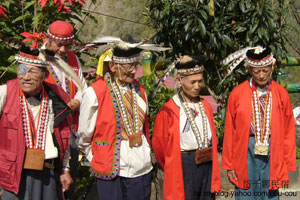
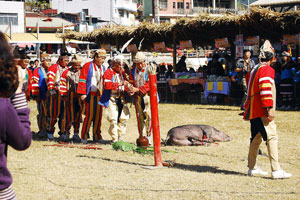
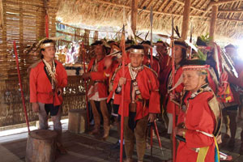

鄒族

1 區域：
鄒族又稱曹族，鳥居龍藏之分類稱其為新高族。鄒族有「特富野」、「達邦」、「伊姆諸」與「魯富都」社，而四社中的伊姆諸社與魯富都社都於廿世紀初因惡疾、部落首長絕嗣而廢社。目前有八個村落，來吉、樂野附屬於特富野社。新美、茶山、山美、里佳附屬於達邦社。 主要居住在高雄市的卡那卡那富族和拉阿魯哇族過去被視為鄒族的分支，合稱「南鄒」，2014年成為法定的獨立族群。
2 文化：
鄒族部落中最重要的祭儀為「播種祭」、「homeyaya （小米收穫祭）」與「mayasvi （瑪雅士比）」三大祭儀。鄒族一年一度的mayasvi （瑪雅士比），目前分由達邦及特富野分別舉行祭典儀式，mayasvi又譯為戰祭。
以獵物的皮為衣飾是鄒族的特色。鄒族以柔軟的山羌皮毛做帽飾、皮鞋；以山羊皮作衣服。鄒族鞣皮的技術讓其他族群望塵莫及。 先刮除皮上的肉，曬乾、再放在臼裡，以杵打軟，或放在粗大圓木上由兩人拉扯，如此重覆多次，直到獸皮柔軟為止。鄒族的皮衣、帽並不保留獵物的手，。
3 傳統宗教：
鄒族的Kanakanavu(卡那卡那富族)、Hla'alua(拉阿魯哇族)和阿里山Tsou等三群各自有其特有的「傳統」宗教信仰體系，包括，各有一套神靈信仰體系、一套隨著作物種植、狩獵以及魚撈等生產活動運作的歲時祭儀，還有各自的生命儀禮與巫術等。舉行這些「傳統」祭典儀式時，需由特定的宗教領袖或儀式專家來執行。
舉行這些「傳統」祭典儀式時，需由特定的宗教領袖或儀式專家來執行。Kanakanavu過去有巫師ulupu主持「傳統」祭儀，但由於最後一位巫師已經在十多年去世了，因此今日是由頭目來主持，並且由長老們來共同協助。
至於Hla'alua目前仍舉行的「傳統」祭儀miatungusu也主要是由頭目或副頭目來主持，並且會有熟悉儀式過程的長老們擔任助祭，以協助祭儀能夠順利完成。
阿里山Tsou的情形亦相差不遠，各家族族長或各社的領袖於家族祭儀或全社祭儀舉行的過程當中，帶領儀式過程的進行，各家族或各社的長老則從旁提供意見並協助儀式過程的執行。



小測驗時間
1.請問下列何者 "不是" 鄒族的文化?
2.請問下列何者 "不是" 原本歸類在鄒族的?
https://zh.wikipedia.org/wiki/%E9%84%92%E6%97%8F
http://kids.tacp.gov.tw/home01-9.htm
http://www.knowlegde.ipc.gov.taipei/ct.asp?xItem=1001646&CtNode=17015&mp=cb01
http://www.tipp.org.tw/aborigines_info.asp?A_ID=12&AC_No=1
http://www.tacp.gov.tw/home02.aspx?ID=$3101&IDK=2&EXEC=L